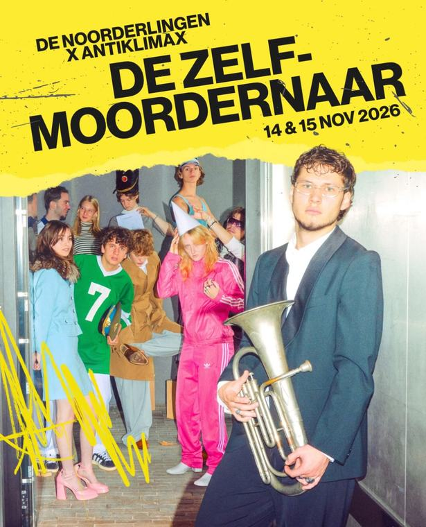

De Zelfmoordenaar

Для производственной группы подготовительной школы De Noorderlingen Antiklimax написал совершенно безумную переработку «Самоубийцы» — когда-то запрещённой советской сатиры Николая Эрдмана.
Десять потерянных молодых людей, пятеро чересчур заботливых родителей, один блестящий занавес и бесконечные мнения о том, как надо жить и зачем умирать. Сатирическая комедия (12+) о смерти, жизни и обо всём, что между ними.

Создатели
- концепция и текст
- Antiklimax
- режиссура
- Lies van de Wiel
- в ролях
- Mees Alberts, Jip Kluwer, Ido Kootstra, Maaike Kroneman, Misha Leigh-Valles, Joan Leunge, Lente Mintjes, Oskar Moorlag, Sven Mulder, Daan Wieringa
- костюмы
- Freja Roelofs, Demi Dijstelberge, Jonna Mulder
- оформление
- André Kok
- техника
- Herman van Keulen
- продюсирование
- Jente Rikken
- по мотивам
- De Zelfmoordenaar van Nikolaj Erdman
Показы
- 13–15 нояб. 2026 Jonge Harten Festival, Groningen

фото: De Noorderlingen, Jonge Harten